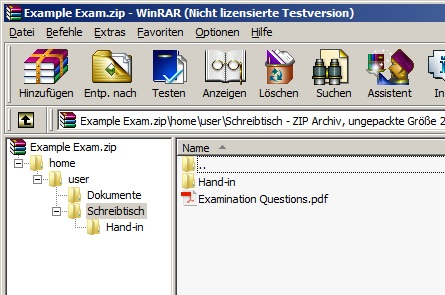
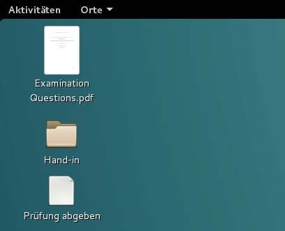
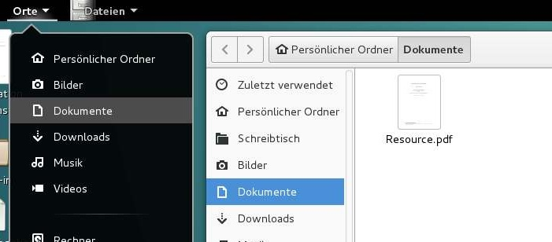

Create a zip-file as exam file ¶
If your exam has a very simple structure, you can create a zip-file as exam template. For example, if you only need to put a file with your examination questions on the desktop and maybe some other resources somewhere else. If your exam does not need special configurations, installed/uninstalled applications or more complex system settings, then the zip-file is the easiest way to go.
If you decide to create a zip-file as exam template, make sure it holds the correct directory structure, so that your files are visible and accessible in the exam. All files in the zip-file will be extracted to the exam machine in that directory, where they were in the zip-file. If the directory does not exist, it will be created with default permissions. With a zip-file, it is not possible to create special files or set permissions on files (use a squashfs-filesystem for that).
The list below contains an example directory structure for an exam:
/home/
/home/user/
/home/user/Schreibtisch/
/home/user/Schreibtisch/Examination Questions.pdf
/home/user/Schreibtisch/Hand-in/
/home/user/Dokumente/
/home/user/Dokumente/Resource.pdf
The corresponding zip-file would look like this:

If your want to put a file - say Examination Questions.pdf - at the Desktop, then drop the file in your zip file to the location /home/user/Schreibtisch/ as illustrated it the picture above. The testee will see all files in his/her exam under the directory, where you dropped them in the zip-file. The above zip-file will look in an exam as the pictures below.


It is highly recommended to create a directory like Hand-in at the Desktop and advice the testee to put all results in this directory. Even though it might not be necessary, it will be easier to collect the results after the exam is done.
That's it! You can now upload the zip-file in the Actions->Create Exam wizard. If need a more complex configuration, then please have a look at Create a squashfs-filesystem as exam file.